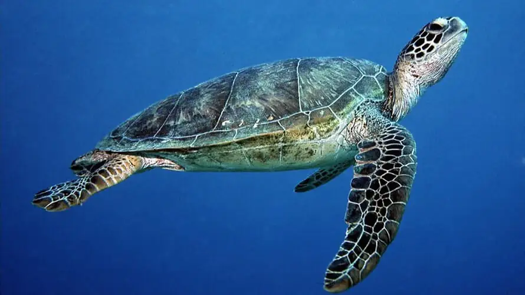

Green Turtle (Chelonia mydas)
The Green turtle is one of the most abundant turtle species found in Sri Lanka. It is known for its large size, herbivorous diet, and the green coloration of its fat. Sri Lanka's beaches serve as important nesting sites for Green turtles.